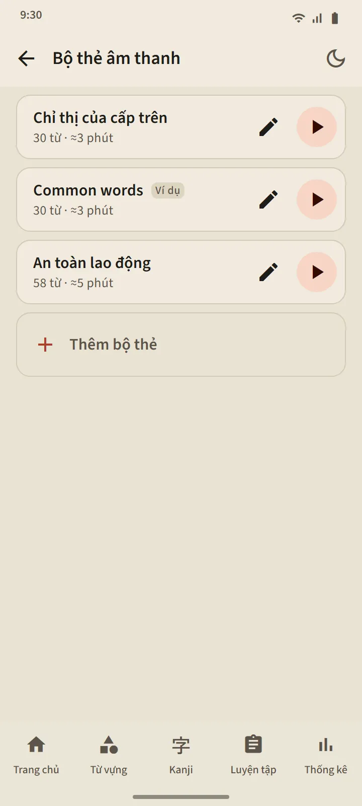

Bộ thẻ âm thanh do bạn tự tạo
Tạo một bộ thẻ từ 5 đến 100 từ: tìm từng từ một, hoặc lấy hàng loạt từ bất kỳ bộ từ vựng nào. Trình phát đọc mỗi từ bằng tiếng Nhật, rồi đến nghĩa của từ bằng ngôn ngữ của ứng dụng (tắt “Đọc to nghĩa” nếu chỉ muốn nghe tiếng Nhật). Từ hiện tại được hiển thị lớn kèm furigana; chạm vào một từ trong danh sách để nhảy đến từ đó.
Các nút điều khiển: xáo trộn, lặp lại, và tốc độ 0,75×, 1× hoặc 1,25×. Trình phát vẫn tiếp tục khi màn hình tắt hoặc khi bạn chuyển sang ứng dụng khác; thông báo của trình phát và các nút trên tai nghe vẫn điều khiển được.
- Bản miễn phí: 3 bộ thẻ. Premium: không giới hạn, và một bộ thẻ có thể được tải về thành một tệp âm thanh (M4A).
- Một bộ thẻ mẫu, “Common words”, được tạo tự động từ những từ xuất hiện nhiều nhất; bạn có thể sửa hoặc xóa tùy ý.
- Việc nghe không bao giờ thay đổi lịch ôn hay giai đoạn của một từ.


Luyện nói: nói xong là sang từ tiếp theo
Một từ bạn đã ở giai đoạn Đã nhớ hoặc Thành thạo hiện lên trên thẻ; micrô tự bật, bạn nói từ đó, và nếu điện thoại nhận ra, từ tiếp theo sẽ xuất hiện. Nếu không, màn hình hiện những gì nó nghe được và nghe lại; sau ba lần thử, ứng dụng phát một ví dụ. Nút micrô, nút ví dụ và nút Bỏ qua luôn có sẵn. Một buổi luyện có 5, 10, 15 hoặc 20 từ.
Giọng nói của bạn được xử lý bởi dịch vụ nhận dạng giọng nói của điện thoại (thường là của Google); ứng dụng không ghi âm hay lưu lại. Chỉ từ được chấm, không chấm giọng của bạn. Vì nhận dạng giọng nói có thể nghe nhầm, phần luyện này không bao giờ hạ giai đoạn của một từ.

Viết kanji: từng nét một
Dành cho những kanji bạn đã ở giai đoạn Đã nhớ hoặc Thành thạo. Chỉ hiện nghĩa và cách đọc; bạn viết trong một khung rộng, và mỗi nét được kiểm tra khi bạn nhấc ngón tay lên: hình dạng, hướng và thứ tự. Nét đúng sẽ được chỉnh về hình dạng chuẩn; sai thứ tự hoặc ngược hướng sẽ bị từ chối kèm một câu giải thích; sau hai lần sai, nét tiếp theo hiện mờ cùng điểm bắt đầu.
- Từ trí nhớ: khung trống. Có nét mờ: chữ kanji hiện mờ, để khởi động. Chạm theo thứ tự: chữ kanji hiện đầy đủ; bạn chạm vào các nét theo đúng thứ tự.
- Nút Hoạt ảnh phát lại toàn bộ chữ kanji đang được viết, bất cứ lúc nào.
- Một chữ kanji được tính là viết được sau khi bạn viết nó từ trí nhớ, không cần trợ giúp, vào hai ngày khác nhau; mỗi buổi có 5, 10 hoặc 15 chữ.


Phát âm ở mọi nơi
Thẻ từ vựng, thẻ kanji, chi tiết từ, bài học kana, ví dụ ngữ pháp và câu hỏi nghe đều được đọc bằng công cụ text-to-speech tiếng Nhật của điện thoại, nên không cần tải tệp âm thanh nào. Chất lượng giọng đọc phụ thuộc vào công cụ của từng điện thoại.